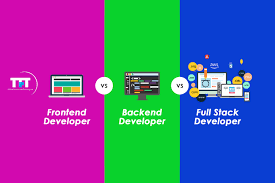

What is Web Development?
Web Development is the work that involves creating and developing websites to be published and used onto the internet. It is the process of building,
programming, and maintaining websites. Anything that just has a plain script to the most beautiful masterclass of complex web applications is considered
to be an element of Web Development. Every website that is on the on the internet has been written in a programming language called Hypertext Markup Language,
or more commonly known as HTML. HTML provides the framework and the structure to a website. It establishes where things go on a website and is the foundation to building
a successful website. However, HTML alone is not capable enough of creating a fully functional, responsive website. That's where languages such as Cascading Style Sheets (CSS)
and JavaScript come into play. Imagine a human skeleton, that is a website with only HTML; now imagine a human body with a skeleton and organs, that's a website with HTML & CSS.
Now imagine a fully functional human being with a brain that sends nerves to every part of your body, that's a website that uses HTML, CSS, & JavaScript. That is only the frontend part, the backend part
helps maintain and scale the website. The video on the right goes more in-depth about what a Web Developer truly is.
All About Web Development
Benefits of Being a Web Developer
The benefits of becoming a Web Developer are endless, you have the ability to create websites either for yourself, a business, or you can
even branch out and do some freelance work with clients. Other than having the ability to create full-scale websites, the salary that Web Developers make is
pretty good considering the fact that it doesn't take long to become a good Web Developer. The average salary for a Full-Stack Web Developer (a combination of Frontend
and Backend) in Ontario is about $84,000. If that doesn't sound pleasing, moving down south to the States could be a better option where the average Full-Stack Developer earns about
$125,000.
Another benefit is that the journey to becoming a Web Developer is very diverse. Unlike professions like doctors or dentists where they have to go to school and study their practice, with web development there are plenty of ways of starting your journey to become one. The most promising and guaranteed one is getting some sort of post-secondary degree in the field of computer science or software engineering, another option is to teach yourself by looking up the millions of videos and articles that help beginners learn how to become a Web Developer. Another option is a mix between the two by attending a coding bootcamp where you are given a set of videos and modules to complete but it's in a DIY format. Regardless, there are many paths to take to become successful in this profession.
Different Types of Web Development
When it comes to Web Development there is typically three different sections. You have Frontend Development which takes care of the look and feel of the website and handles
all of the user interface and user experience components; Backend Development which accounts for creating the databases and connecting servers to the website, backend is responsible for all of the
data handling/storing in a website. Then there is Full-Stack Development which is a mix of the two.

Usually all web developers become a Full-Stack Developer at some point in their career whether it be for the salary increase or because it's hard to have one type of development without the other. To build a successful, sustainable website like an e-commerce site for example; for starters, the site needs to look visually appealing in order to attract customers, it also needs to be able to handle all of the requests that are coming in from different places at the same time. Now you see how frontend and backend go hand in hand. When web developers are creating a product, the frontend is typically done first unless the product is deemed to be complex. There next two pages go more in depth about the two factors of web development and talks about the pieces that separate the two.